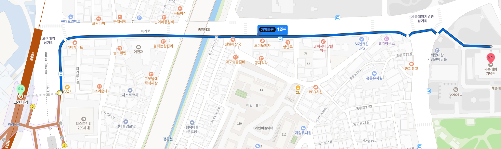

We’re so excited to have you join us for our special day! This guide is here to help make your trip smooth, fun, and memorable. It’s divided into two parts:
💒 On Our Wedding Day – Everything you need to know about the big day (October 24th, 2026)
✈️ Korea Travel Tips – Helpful advice for getting around, eating well, and enjoying your time in Korea
We hope this guide helps you plan ahead, feel at ease, and make the most of your experience—before, during, and after the celebration. 💕
Reading Time about 10 Min (It's quite long!)
👰♀️ On Our Wedding Day 🤵♂️
🕰️ Important Time Schedule
Time
Event
Place
11:00
Change to Hanbok
Hanbok Store
12:00
To Wedding Venue
Public Transport
13:00
Arrive and Enjoy the Venue, Take pictures
Wedding Venue
15:00
Start of Wedding Ceremony
Main outdoor Hall
16:00
Food Buffet
B1 Floor of Venue
17:30
Return the clothes
Public Transport
📱 WhatsApp Group for Guests Traveling to Korea
We’ve created a WhatsApp group for all our friends coming from abroad! Feel free to ask questions, coordinate plans, or just chat:
👉 Join the Group Chat
📍 Dress Code & How to Get to the Hanbok Store
Hanbok is the beautiful and traditional attire of Korea. Since our wedding ceremony will follow a traditional Korean style, we’ll be wearing traditional wedding Hanbok.
We thought it would be even more special if our guests could join us in Hanbok as well—so we'd love for you to be part of the experience!
To make it easy, we’ll reserve a Hanbok rental shop for you, and we'll
cover the
rental costs. That way, you can enjoy dressing up without any hassle.
While the shop isn’t 100% confirmed yet, we’re currently planning to use:
👘Daehan Hanbok(English-speaking owner) 📍133-2 Sajik-ro, Jongno-gu, Seoul Naver Map Link 🚇Located right in front of Exit 4 at Gyeongbokgung Station (Line 3)
We’ll share final confirmation and rental details soon, but just wanted to give you a heads-up so you can look forward to this fun part of the day!
🚇 How to Get to the Wedding Venue
✅ Recommended Route from Hanbok Rental Shop to Nearest Subway Station of the Wedding Venue
Start at: 🚇 Gyeongbokgung Station (경복궁역) – Line 3 (Orange Line) → Board the train heading northbound (toward Daehwa Station)
Transfer at: 🚇 Yaksu Station (약수역) → Change to Line 6 (Brown Line)
Arrive at: 🚇 Korea University Station (Goryeodae Station 고려대역) – Line 6
→ Exit through Exit 3
✅ From Korea University Station to King Sejong Memorial Hall:
You have two options:
Option 1 – Free Shuttle Bus from Wedding Venue 🚐
A free shuttle bus will operate every 15 minutes from Korea University Station (Exit 3).
It will take you directly to the wedding venue: King Sejong Memorial Hall.
Just wait at the designated shuttle pick-up area near Exit 3.
Option 2 – Walk 750m 🚶
You can also walk from Korea University Station Exit 3.
Walking time: about 10–15 minutes (750m).
The route is straightforward and will be marked for guests.

⏱️ Estimated Time & Cost
Total travel time: 30–40 minutes
Subway fare: Around ₩1,350 (1 EUR or Dollars) with T-Money card
Shuttle bus: Free
For people with difficulty using public transport (e.g., with babies!) A taxi from the city center (hotel or Hanbok shop) to the wedding venue will cost about ₩10,000 – ₩15,000.
🎎 Traditional Korean Wedding @ King Sejong Memorial Hall
📍 Venue: King Sejong Memorial Hall (세종대왕 기념관)
A beautiful traditional venue and museum honoring King Sejong, the creator of Hangul (the Korean alphabet). Nestled in the city, it features stunning hanok-style buildings and gardens—perfect for wandering and taking memorable photos!
👘 Dress Code: Wearing hanbok, the traditional Korean costume, is recommended — but totally optional! Come as you're comfortable.
📷 Group Photo Zone: After the ceremony, join us for a group photo to capture the moment with everyone!
☕ Coffee Truck: Free coffee & drinks will be available! 🎫 Just use your coffee coupon at the truck parked near the venue.
🍱 Wedding Meal: 🎟️ Enjoy a traditional Korean buffet after the ceremony by presenting your meal ticket.
💌 Gift Desk: In Korea, it’s customary to have a gift desk where guests can leave their wedding gift or money envelope. A close family member will be there to greet you, note your name, and safely take care
of the gift box.
🎁 If you’d like to give us something, just look for the gift desk in the lobby of the main
building.
🕊️ Wedding Ceremony Flow (전통혼례 식순)
1. Bride & Groom Procession (신행행렬) 👣 The bride and groom make a traditional entrance in ceremonial attire.
2. Greeting Rituals (친영례 & 전안례) 🙇 The couple bows and the groom offers a wooden goose, symbolizing faithfulness.
3. 1st Performance (1차 축하공연) 🎶 A traditional music or dance performance to celebrate the union.
4. Bowing Ceremony (교배지례) 🙏 The bride and groom exchange deep bows to show mutual respect and commitment.
5. Respect Rituals to Parents (서천지례 & 서배우례) 👪 The couple pays formal respects to their parents, thanking them for their guidance.
6. Sharing of Wine (합근지례) 🍶 The couple drinks from a shared gourd cup, symbolizing their unity as one.
7. 2nd Performance (2차 축하공연) 🎉 Another celebratory performance to bless the couple's future.
8. Couple Exit (신랑·신부 퇴장) 🚪 The newlyweds leave the ceremony area, now united as a married couple.
9. Group Photo & Meal (기념사진 & 피로연) 📸 Guests gather for a group photo and head to the reception for a traditional meal.
For the wedding reception, we’ll be serving a buffet-style meal. The menu is already pre-set, but we’ve done our best to include as many vegetarian-friendly options as possible.
🥗 The food will be a mix of Korean and Western dishes, including salads, rice, and a variety of vegetable-based side dishes.
However, please note that some Korean dishes may contain fish-based sauces or broths (like anchovy or seafood stock), which are traditionally used in many recipes.
🌿 While we’ve tried to be mindful of dietary preferences, we sincerely ask for your understanding that we may not be able to accommodate all vegan or vegetarian needs perfectly due to local food customs and venue limitations.
🌿 If you are vegan, we will order vegan food for you in advance. Make sure to check your dietary option in the RSVP form.
Thank you so much for your understanding — we hope you enjoy the meal and the celebration! 💛
🎁 What to Give as Gifts
In Korean weddings, instead of bringing physical gifts, guests usually give “축의금” (chug-ui-geum) — a monetary gift in an envelope. This is a traditional way to congratulate the couple and help with wedding expenses.
💌 That said, your presence alone means the world to us — especially since many of you are coming from far away. Gifts are absolutely not required. But if you really wish to give something, we will gratefully accept
Chukeuiguem 축의금 (cash gifts).
💸 How much is usually given? To help avoid confusion, here’s a common guideline in Korea:
₩50,000 KRW (~35 EUR or USD): for acquaintances or casual guests
₩100,000 KRW (~70 EUR or USD): for friends or colleagues
₩200,000 KRW and up: for close friends or family
🧧 At the wedding entrance, you’ll find a table for gifts if you’d like to give us something.
Thank you for celebrating with us — your love and support is the greatest gift of all! 💛
🎉 After the Wedding
While wedding after-parties aren't really a tradition in Korea, we didn’t want the celebration to end too soon—so we’re planning a casual get-together in the evening to wind down with some drinks and great conversation. 🍻✨
The details aren’t finalized yet, but we're thinking of heading to a pub nearby your hotel for a relaxed night out. Nothing fancy or formal—just a chance to hang out, laugh, and toast the day together.
It’s totally optional—we know some of you might be tired after a full day—but if you’re up for it, we’d love for you to join us. Who knows, we might even end the night at a Korean karaoke (aka Noraebang)! 🎤🎶
More info to come soon!
🎥 Curious About the Venue & Ceremony?
If you’d like a sneak peek of the venue and what to expect during the ceremony, check out the videos in the links below! It’ll give you a feel for the atmosphere and how the day will unfold.
📺✨ Perfect for getting a glimpse of the traditional Korean wedding vibe!
✅ Naver Maps 📌 Highly recommended—works much better than Google Maps in Korea. App Store (iOS): Download here Google Play
(Android): Download here
✅ KakaoMap 📌 Another solid map alternative with accurate directions. App Store (iOS): Download here Google Play (Android):
Download here
✅ KakaoMetro 🚇 Simple and clean subway navigation app for Seoul and other cities. App Store (iOS): Download here Google Play (Android):
Download here
✅ Korea Tour Card (T-Money App) 💳 Use to manage your T-Money card for public transport + tourist discounts. App Store (iOS): Download here Google Play (Android): Download here
✅ Subway & Public Transport Seoul’s subway is efficient, color-coded with gates numbered, and has English announcements. T-Money Card: Works on subways, buses, taxis, and even some convenience stores. You can easily buy one at convenience stores everywhere (including the airport).
✅ KakaoT (KakaoTaxi) 🚕 Best app for hailing taxis in Korea. App Store (iOS): Download here Google Play (Android): Download here
✅ Taxis: Most drivers don’t speak English, so use translation apps or show addresses in Korean.
KakaoT app can be used to hail taxis easily.
Taxi prices are cheap in Korea. Don’t hesitate to take a taxi when
there are more than 2 people.
Fare Calculation Example: - Initial 1.6 km: Covered by the base fare of ₩4,800 (about 3 EUR or Dollars). - Remaining 3.4 km: Charged at approximately ₩100 per 131 meters, totaling around ₩2,600. - Total Fare: Approximately ₩7,400 (about 5 EUR or Dollars).
🚌 Airport Bus (Limousine Bus)
✅ General Info: Airport limousine buses connect Incheon Airport (ICN) and Gimpo Airport (GMP) with major areas throughout Seoul.
Comfortable, spacious seats with ample luggage storage.
English announcements and clearly marked stops.
✅ Tickets & Pricing: Purchase tickets at airport ticket counters or directly from the driver.
Ticket counters are located outside arrival terminals; look for signs marked "Airport Limousine Bus."
Ticket prices
typically range from ₩10,000 to ₩17,000 (~7 to 12 EUR or Dollars), depending on distance and bus type (standard vs. premium).
✅ Example Fare Calculation: Incheon Airport (ICN) → Seoul City Center (Myeongdong):
Standard Limousine Bus fare: Approximately ₩17,000 (~12 EUR or Dollars)
Travel time: ~60–75 mins (depending on traffic)
✅ How to Find Your Bus:
Bus stops are clearly numbered and marked in front of airport terminals.
Check your bus number and destination on screens or signs near the stops.
Airport staff can help guide you if needed.
✅ Recommended Resources: Use KakaoMap or Naver Maps for real-time schedules and stops. Official website: Airport Limousine Bus for routes and
timetables.
🚄 Airport to Seoul by Subway & Train
✅ From Incheon International Airport (ICN):
1. Airport Railroad Express (AREX) This is the most popular train connection between Incheon and Seoul.
➤ There are two AREX options:
🔹 Express Train (Non-stop to Seoul Station)
Route: Incheon Airport → Seoul Station (non-stop)
Time: ~43 minutes
Price: ₩9,500 (~6.5 EUR or Dollars)
Perks: Reserved seating, luggage storage, very comfortable
Tickets: Buy at the AREX Express desk or vending machines
Plant (플랜트) 🧁 Well-loved vegan café with hearty mains and gluten-free treats 🔗 View Location
🌟 Itaewon Area (Yongsan area)
Monk’s Butcher Itaewon (몽크스부처 이태원점) 🍔 Vegan comfort food like burgers, steak, pasta 🔗 View Location
By Tofu Sandwich (바이두부) 🥪 Cozy sandwich café with tofu-based fillings 🔗 View Location
🌟 Jamsil & East Seoul Area (Gwangjin, Dongdaemun, Gangdong)
New Zealand Story (뉴질랜드 스토리) 🥝 Vegan-friendly café with a Kiwi twist 🔗 View Location
Mananim Recipe (마나님레시피) 🍲 Home-cooked vegan meals in a casual setting 🔗 View Location
Tip: Worst case, you can always visit Subway Sandwich! It’s (almost) everywhere! 🥪
💳 Money & Payments in Korea
In Korea, credit and debit cards are widely accepted in most places — restaurants, cafes, shops, and public transport. You can rely on your card for most of your spending.
However, for street food stalls, markets, and small vendors, cash is often preferred, so it's a good idea to have some Korean Won (₩) on hand.
💶 Bringing EUR or Dollars? You can bring EUR or Dollars (€) and easily exchange them at the airport.
We actually recommend doing your exchange at the airport, because the exchange counters there are run by official
Korean banks, not private companies — so the process is safe, transparent, and commonly used by locals too.
If you end up spending your cash too fast, then just visit any of the bank branches in Korea. Or you can also just withdraw
money at the ATM (fees may apply).
💡 How much cash should you bring? For things like street snacks, local treats, and small expenses, we suggest bringing about €200 per person in cash, which should be enough for a 2-week stay in Korea.
For everything
else, your credit card will work just fine!
🚄 Traveling to Other Cities in Korea
Exploring beyond Seoul is convenient and efficient, thanks to Korea's well-developed transportation network.
🚄 KTX (Korea Train Express) The KTX high-speed trains connect major cities such as Busan, Gyeongju, Daegu, and Daejeon. They offer a fast, comfortable, and scenic way to travel across the country.
Booking Tickets: Tickets can be purchased up to a month in advance through the KORAIL Official Website.
Departure Stations: In Seoul, KTX trains depart from Seoul Station and Yongsan Station.
🚌 Express & Intercity Buses Buses provide a cost-effective and comfortable means to reach various destinations, including smaller towns not served by the KTX.
Major Terminals in Seoul:
Seoul Express Bus Terminal: Services routes primarily to southern regions.
Dong Seoul Bus Terminal: Handles routes to eastern areas.
Seoul Nambu Terminal: Covers routes to the southwest.
Booking Tickets:
Express Buses: Tickets can be booked via the KOBUS website.
*Sometimes, booking tickets online might not work because you don't have a Korean ID or phone number. If that happens, feel free to ask us for help!
✈️ Flights to Jeju Island Jeju Island, often referred to as the "Hawaii of Korea," is a popular destination known for its stunning beaches, volcanic landscapes, and unique culture.
Route: Seoul to Jeju — one of the busiest flight routes in the world, with flights departing approximately every 15 minutes.
Duration: About 1 hour.
Airlines: Korean Air, Asiana Airlines, Jeju Air, and T'way Air.
Booking Tickets: Book directly through airline websites or travel platforms like Expedia and Skyscanner.
Departure Airports: Flights leave from both Gimpo International Airport (GMP) and Incheon International Airport (ICN).
Additional Tips:
Advance Booking: Book early during peak seasons for better times and seating.
Payment Methods: Most sites accept international credit cards (always double-check).
Language Support: Most websites offer English options, but a translation app can be helpful.
Identification: Carry your passport — it may be needed when collecting tickets or boarding.
By utilizing Korea's efficient transportation options, you can comfortably explore the diverse attractions and cities the country has to offer. 🚄✨
📱 Useful Apps & Websites
Papago: Best Korean-English translator.
KakaoTalk: Main messaging app in Korea.
VisitKorea: Tourist info, maps, and events.
MangoPlate: Restaurant reviews in English.
🎎 Cultural Tips & Etiquette
Bow slightly when greeting people.
Take off your shoes when entering homes and some traditional restaurants.
No tipping culture, but polite service is expected.
Public trash cans are rare—carry a small bag for trash.
Be mindful of subway etiquette (stay quiet, give seats to elderly and pregnant people).
📶 SIM Card / Wi-Fi
Rent a pocket Wi-Fi or get a Korean SIM card at Incheon Airport.
Free Wi-Fi is common in cafés, subways, and public areas.
🚨 Emergency & Safety
Korea is very safe, but save these important numbers: